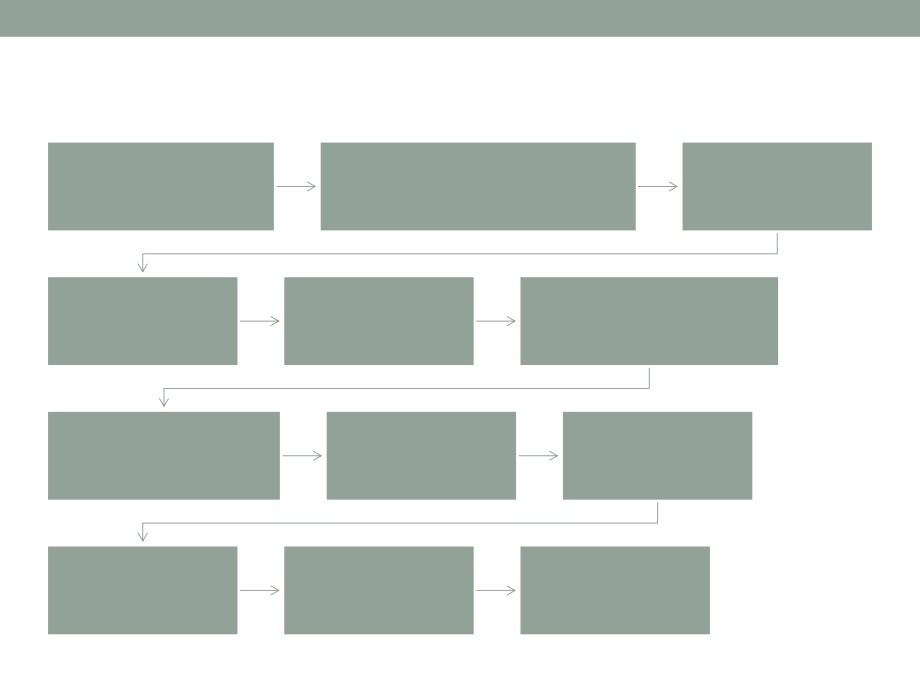
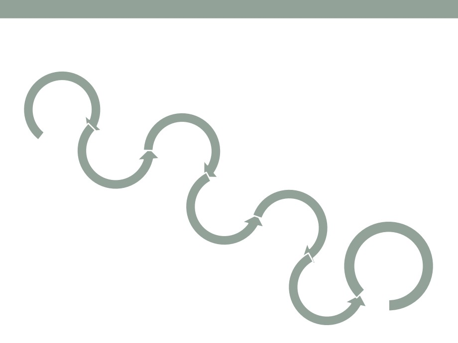

Struktura softverskog inženjeringa
• Strukturu softverskog inženjeringa čine tri ključne
komponente:
• metode
• alati i
• postupci (procedure)
Struktura softverskog inženjeringa -
metode
• Metode - predstavljaju neophodan i uz odreÿene pretpostavke
propisani sistematski način na koji se izvršavaju pojedini zadaci
softverskog inženjeringa:
• planiranje i procjenjivanje projekata,
• analiza sistemskih i softverskih zahtjeva,
• projektovanje strukture podataka,
• definisanje arhitekture programa,
• kodiranje,
• testiranje,
• održavanje
• Izbor odgovarajuće metode u razvoju je složen zadatak - ne
postoje jedinstvene metode koje se mogu primijeniti u
rješavanju svakog problema.
• Različite metode se mogu kombinovati
• Izabrati za korisnika, sistem i proces razvoja najpogodniji i
najprilagodljiviji metod
Struktura softverskog inženjeringa - alati i
postupci
•
Alati - obezbjeÿuju automatizovanu ili poluautomatizovanu podršku u
primjeni metoda
•
Oni predstavljaju pomoć neophodnu da bi se automatizovale
aktivnosti razvoja softvera:
• Za upravljanje projektom, tj. planiranje, procjenjivanje, rasporeÿivanje,
modeliranje, analiza, projektovanje, kodiranje, dokumentovanje, testiranje,
integracija elemenata sa sistemom, upravljanje konfiguracijom, kontrola
kvaliteta softvera, upravljanje podacima i dr.
•
Postupci - povezuju metode i alate
• Niz konkretnih koraka koje je potrebno izvršiti prilikom rješavanja datog
problema ili grupe problema primjenom odreÿene metode.
•
Postupak može imati alternative, a meÿusobnim povezivanjem više
postupaka mogu se kreirati i potpuno novi postupci.
•
Postupci definišu:
• redoslijed izvoÿenja metodoloških koraka i primjene pojedinih metoda,
• koji se rezultati trebaju realizovati u pojedinim metodološkim koracima,
• kakve kontrole treba ugraditi u razvoj softvera u cilju obezbjeÿenja kvaliteta,
• putokaze za softver menadžere u ocjenjivanju izvršenog razvoja
Životni ciklus softvera
• Razvoj softvera predstavlja ciklus aktivnosti u razvoju,
korišćenju i održavanju softvera.
• Tokom života, softver prolazi kroz više faza razvoja, od
začetka, preko inicijalnog razvoja, produktivnog
funkcionisanja, održavanja do povlačenja

Životni ciklus softvera
Analiza i specificiranje
Specifikacija
Inicijalizacija
zahtjeva
funkcija
Strukturiranje
Specifikacija
Specifikacija detaljnih
dijelova i izbor
strukture
komponenti dizajna
Implementacija i
Integracija i
Provjera
otklanjanje grešaka
testiranje
dokumentacije
Obuka i
Održavanje
Povlačenje
upotreba
Životni ciklus softvera
• Inicijalizacija sistema - aktivnost u kojoj se navodi porijeklo
softvera
• Primarni cilj inicijalizacije je realizacija novog softvera kojim se
zamjenjuju ili dopunjuju postojeća softverska rješenja
• Analiza i specificiranje zahtjeva - aktivnost u kojoj se
identifikuju problemi koje je potrebno riješiti novim softverom
• Proces softverskog inženjeringa odreÿuje šta se mora učiniti da bi se
problemi riješili
• Podaktivnosti ove aktivnosti su: identifikacija zahtjeva, analiza i
predstavljanje zahtjeva i razvoj kriterijuma i procedura za prihvatanje
novog softvera
• Specifikacija funkcija - aktivnost u kojoj se identifikuju i
formalizuju podaktivnosti kao što su: definisanje predmeta
obrade, identifikovanje atributa i veza objekata i operacija koje
transformišu ove objekte i utvrÿivanje ograničenja koja
odreÿuju ponašanje softvera
Životni ciklus softvera
• Strukturiranje dijelova i izbor - aktivnost kojom se na osnovu
identifikovanih zahtjeva i specifikacije funkcija strukturira
softver na takve djelove kojima se može upravljati, a koji
predstavljaju logičke cjeline
• Nakon toga se vrši izbor i opredjeljenje, da li novi, postojeći ili
softverski sistem koji se može ponovo koristiti odgovara takvim
cjelinama
• Specifikacija strukture - aktivnost u kojoj se definišu
meÿusobne veze izmeÿu dijelova strukture i interfejs izmeÿu
modula sistema, na način koristan za njihov detaljni dizajn i
upravljanje cjelokupnom konfiguracijom.
• Specifikacija detaljnih komponenti dizajna - aktivnost u kojoj se
definišu procedure putem kojih se izvori podataka svakog
pojedinog modula transformišu iz potrebnih ulaza u zahtijevane
izlaze
Životni ciklus softvera
• Implementacija komponenti i otklanjanje nedostataka -
aktivnost u kojoj se kodiraju dizajnirane procedure i procesi i
pretvaraju u izvorni kod
• Integracija i testiranje softvera - aktivnost koja afirmiše i
održava cjelokupnu integralnost komponenti softvera putem
verifikacije konzistentnosti i kompletnosti uvedenih modula,
verifikujući izvorni interfejs, vezu softvera sa specifikacijama i
uporeÿujući performanse sistema i podsistema sa
identifikovanim zahtjevima.
• Provjera dokumentacije i uvoÿenje softvera - aktivnost koja
obuhvata izradu sistemske dokumentacije i uputstava za
korisnika
• Dokumenta koja su po formi pogodna za provjeru i kao podrška
sistema
Životni ciklus softvera
• Obuka i upotreba - aktivnost koja obezbjeÿuje korisnike
softvera sa instrukcijama i uputstvom za razumijevanje
mogućnosti i ograničenja u cilju efektivne upotrebe
sistema
• Održavanje softvera - aktivnost koja podržava operacije
sistema u ciljnom okruženju na način da obezbijedi
potrebna unapreÿenja, proširenja, popravke, zamjene i dr.
• Povlačenje softvera - poslednja aktivnost u životnom
ciklusu
• Softver razmatran kao beskoristan ipak može da se smatra
proizvodom koji bi se mogao u dijelovima ponovo upotrijebiti
• Komponente softvera koje su već jednom testirane su ekonomski
pogodnije od novih koje će se tek razvijati

11
Životni ciklus IS
Planiranje
Analiza i
Testiranje
dizajn
Implementacija
Održavanje
Ocjenjivanje
Kontrola
12
Razvoj informacionih sistema
• Projekat IS obično realizuje tim stručnjaka koji nisu
sastavni dio organizacije u kojoj se implementira.
• Da bi se obavio uspješan razvoj IS neophodno je:
• obezbjediti podršku rukovodstva firme;
• uključiti korisnike u sve faze razvoja;
• koristiti dokazane metodologije razvoja informacionog sistema;
• jasno definisanje ciljeva i zadataka sistema;
• usredsrediti se na najvažnije probleme i eventualne povoljnosti;
• jednostavan i adekvatan dizajn;
• dobar program obuke uključenih osoba;
• adekvatan plan uvoÿenja nakon završetka projekta;
• dobro definisan i organizovan program održavanja.
13
Faze u razvoju IS
• Planiranje razvoja;
• Analiza i dizajn;
• Implementacija;
• Funkcionisanje i održavanje;
• Vrednovanje i kontrola.
• Svaka od pomenutih faza se mora odraditi
• Faze se mogu dijeliti na podfaze ili aktivnosti
14
Planiranje razvoja informacionog sistema
• Ova faza je dio strateškog planiranja jedne organizacije.
Aktivnosti u okviru ove faze su:
1.
Identifikacija i definisanje problema
2.
Analiza postojećeg informacionog sistema
3.
Šta se želi postići promjenama u informacionom sistemu
4.
Odluka da li se uvodi novi ili modifikuje postojeći informacioni sistem
5.
Projektovanje logičke strukture baze podataka
6.
Definisanje koncepcije tehničke podrške
7.
Definisanje modela kadrovske podrške
8.
Specifikacija potrebnih ulaganja
9.
Analiza izvodljivosti projekta
10. Utvrÿivanje prioriteta i izbor projektanta
11. Planiranje realizacije projekta
12. Prihvatanje ili odbijanje plana razvoja
15
Planiranje razvoja informacionog sistema
1. Identifikacija i definisanje problema - potreba za
kreiranjem novog IS potiče iz sledećih razloga:
• Problemi sa postojećim informacionim sistemom
• Želja za iskorišćavanjem novih šansi i pogodnosti
• Rastuća konkurencija
• Potreba za efikasnijim korišćenjem informacija
• Reorganizacija u organizaciji (spajanje, razdvajanje, i sl.)
• Razvoj organizacije
• Promjene na tržištu i okruženju
16
Planiranje razvoja informacionog sistema
2. Analiza postojećeg informacionog sistema
• Treba sagledati stanje hardvera, sistemskog i aplikativnog softvera,
informatičkih kadrova, troškova funkcionisanja, iskorišćenosti
postojećih resursa
• Procijeniti kvalitet, pravovremenost, količine, načina prezentacije
informacija koje postojeći sistem pruža
3. Treba odgovoriti na pitanje šta se želi postići
promjenama u informacionom sistemu
17
Planiranje razvoja informacionog sistema
4. Treba se odlučiti da li se uvodi potpuno novi ili se
modifikuje postojeći informacioni sistem
• Treba uporediti koje će se funkcije iz postojećeg sistema zadržati,
koje će se modifikovati a koje nove će se uvesti
• Treba razmotriti organizaciju podataka i klasa podataka, baza
podataka itd.
• Na osnovu razlika izmeÿu projektovanog i postojećeg
informacionog sistema donosi se odluka o vrsti promjena u
informacionom sistemu
5. Projektovanje logičke strukture baze podataka - realizuje
se na nivou entiteta (objekata) i veza meÿu njima
18
Planiranje razvoja informacionog sistema
6. Definisanje koncepcije tehničke podrške - na osnovu ciljeva koji se
žele postići informacionim sistemom, veličine organizacije i sl. donosi
se odluka o obimu i strukturi računarskih resursa, komunikacione i
periferne opreme, sistemskog softvera, itd.
• Hardver:
• visoka integracija
• modularna izgradnja - naknadnim ugradnjama se postižu poboljšavanja i
proširivanja primjene
• visoka pouzdanost, sigurnost i raspoloživost
• lako održavanje
• Sistemski softver:
• modularnost
• user friendly okruženje
• podrška drugim programskim alatima
• efikasno korišćenje postojeće opreme
• jednostavno održavanje
19
Planiranje razvoja informacionog sistema
7. Definisanje modela kadrovske podrške - način na koji su
organizovani djelovi i pojedinci u organizaciji kojima je
povjereno voÿenje poslova u domenu informacionog
sistema
8. Specifikacija potrebnih ulaganja - procjena ulaganja u
sledeće elemente informacionog sistema:
• hardver
• sistemski softver, softver za rad sa bazama podataka
• softver za automatizaciju kancelarijskog poslovanja
• razvoj i obuku informatičkih kadrova
20
Planiranje razvoja informacionog sistema
9. Analiza izvodljivosti projekta
• Tehnička izvodljivost - obezbjeÿivanje potrebnih resursa (hardvera i
softvera)
• Ekonomska izvodljivost - da li se mogu obezbijediti sredstva i da li
će izgradnja i korišćenje informacionog sistema biti isplativo
• Zakonska izvodljivost - da li postoje zakonske smetnje za rad
informacionog sistema
• Primjer: informacioni sistem studentske službe - mogućnost online
prijavljivanja ispita; Problem - po zakonu ispitna prijava studenta mora
da bude u dosijeu
• Operacionalni aspekt - da li će sistem biti prilagoÿen ljudima koji će
da ga koriste
• Planski - da li se sistem može realizovati na vrijeme
21
Planiranje razvoja informacionog sistema
10. Utvrÿivanje prioriteta i izbor projektanta
• Informacioni sistem se prvo uvodi na najkritičnijim mjestima -
najveći broj radnika, najviše rukovodstvo, najvažniji poslovi i sl.
11. Planiranje realizacije projekta
• Složena faza koja se obično povjerava stručnjaku iz oblasti
organizacije rada
12. Prihvatanje ili odbijanje plana razvoja
• Ako su prikupljene informacije dovoljne za donošenje odluke treba
donijeti odluku o razvoju informacionog sistema
• Ako nema dovoljno informacija treba zahtijevati prikupljanje
dodatnih informacija i činjenica o informacionom sistemu
• Trenutna negativna odluka ne znači da predloženi plan razvoja nije
dobar, već samo da ne treba ići u dalji razvoj u ovom trenutku -
mogu se koristiti možda u narednom periodu
22
Analiza i dizajn informacionog sistema
• Nakon usvajanja plana razvoja IS prelazi se na fazu analize i
dizajna IS
• Faze analize i dizajna su karakteristične po obimnoj dokumentaciji
koja ih prati
• Analiza se provodi detaljno na sve automatizovane i
neautomatizovane poslove koristeći sistemsku strukturiranu
analizu
• Definisanje i analiza problema (Šta?)
• Ispitivanje i razumijevanje problema - prikupljanje informacija
(Zašto?)
• Izbor najbolje opcije - donošenje odluka (Kako?)
• Postavljanje ciljeva
• Izvodljivost
• Izbor najboljeg rješenja
23
Analiza i dizajn informacionog sistema
• Dizajn sistema je specifikacija novog sistema koji će
postavljene zahtjeve obaviti na efikasan način
• Dvije važne faze dizajna sistema:
• logičko projektovanje - modeliranje podataka i modeliranje procesa.
• Rezultat logičkog projektovanja mora biti razumljiv za korisnika i
projektanta i treba da bude nezavisan od implementacije
• fizičko projektovanje - prevoÿenje logičkog projekta na konkretnu
opremu, konkretne softvere koji uključuju konkretne baze podataka
24
Analiza i dizajn informacionog sistema
• Dizajn sistema - Ulaz, obrada, izlaz, skladištenje, procedure,
kontrola
• Logički dizajn (Šta će da radi?)
• Ulaz: sadržaj, format, količina, frekvencija, vrijeme
• Obrada: pravila, model, vrijeme
• Izlaz: sadržaj, format, organizacija, količina, frekvencija, vrijeme
• Skladištenje: podaci, format, organizacija, veza, količina
• Procedure: aktivnosti, pravila, lokacija, vrijeme
• Kontrola: sigurnost, tačnost, validnost, nadzor
• Fizički dizajn (Kako će da radi?)
• Ulaz: tastatura, glas, skener
• Obrada: PC, operativni sistem, aplikativni softver
• Izlaz: fajlovi, tekst, papir, audio
• Skladištenje: CD, server
• Procedure: backup, unos podataka, korišćenje
• Kontrola: šifre, pristup, log
25
Fizički i logički model
• Logički model se predstavlja skup entiteta i veza u jednoj
organizaciji. On ne ulazi u razmatranje kako će taj model
biti stvarno implementiran. Osnovne koristi ovoga modela:
• pogodan je za razumijevanje sistema
• daje osnovu za modelovanje baza podataka
• sprečava redundanciju i nekonzistentnost podataka
• odličan je za sagledavanje mogućnosti razmjenje i dijeljenja
podataka
• pojednostavljuje održavanje i smanjuje troškove održavanja
• značajno olakšava analizu uticaja razvijenog ISa na poslovanje
26
Fizički i logički model
• Fizički model predstavlja primjenu logičkog modela na
stvarni sistem sa starnom bazom podataka, stvarnim
hardverom, stvarnim komunikacionim sistemima itd.
• Fizičko projektovanje podrazumjeva odabir, instalaciju i
povezivanje računarske i komunikacione opreme
• Fizički model zapravo samo ograničava upotrebu logičkog
modela jer prilikom implementacije ne može da bude npr.
prezime sa beskonačno karaktera ili ne može da bude
beskonačna brzina komunikacije, mora se misliti o
bezbjednosti sistema i pravima pristupa itd.
27
Logički model - prednosti
•
Iako logički model može djelovati kao višak on je izuzetno koristan i
njegov razvoj se isplati na duži rok
•
Neke od prednosti logičkog modelovanja sistema:
• Funkcionalne specifikacije su pojašnjene i izbjegnute su pretpostavke
• Potvrÿeni su poslovni zahtjevi
• Omogućeno je jednostavno poboljšanje poslovnih procesa
• Omogućuje tehnologiju fokusiranu na zahtjevima a nezavisnu od tehnologije
• Smanjuje se vrijeme razvoja i cijena istog
• Dobijaju se šabloni za kompanije koji se mogu koristiti i u drugim sistemima
• Omogućeno je jednostavno ponovno korišćenje podataka i njihova razmjena
• Brži povrat uloženih sredstava
• Lakše se uočava pojava meÿupodataka (metadata) koji mogu biti veoma
korisni
• Eliminisanje nepotrebnih komunikacija izmeÿu aplikacija
• Fokusiran je na analizu podataka i komunikacione aspekte
• Uspostavljanje konvencije za imenovanje podataka
• ...
28
Implementacija sistema
• Implementacija je faza u kojoj se projekat treba implementirati
na realni sistem u realnim uslovima
• Faze u implementaciji projekta su:
• Najava - u cilju uklanjanja straha zaposlenih i prepreka za realizaciju
• Organizacija kadrova informacionog sistema
• Izbor i instalacija opreme - raspisivanje tendera, vrijem isporuke,
instalacija, garantni rokovi, obezbijeden servis itd.
• Izrada ili nabavka softvera - kupovina gotovog softvera, razvoj softvera
sa sopstvenim kadrovima, kombinovanje prethodna dva načina i sl.
• Formiranje baze podataka - jedna od najvažnijih faza, jer je baza
podataka osnova IS
• Obuka korisnika
• Zamjena sistema - obično u početku dva sistema rade paralelno, zatim
novi sistem postepeno zamjenjuje stari, pri čemu se najvažniji elementi
dupliraju sve dok se na kraju potpuno ne preÿe na novi sistem
29
Održavanje sistema
• Održavanje hardvera:
• redovne aktivnosti, provjere, čišćenje, podešavanje i zamjena
potrošnog materijala
• zamjena dijelova ureÿaja ili cijelih ureÿaja
• instalacija novih ureÿaja
• ...
• Održavanje softvera:
• prepravke koje ispunjavaju nove zahtjeve korisnika
• otklanjanje grešaka u ranijim verzijama
• prepravke softvera zbog promjena hardvera ili sistemskog softvera
• ažuriranje softvera
• ...
• Troškovi održavanja rastu tokom vremena i to mnogo brže na
strani održavanja softvera
• Softversko održavanje kod starijih sistema čini čak oko 50-75%
ukupno izdvojenih sredstava za održavanje
30
Vrednovanje i kontrola IS
• Ova faza nastupa kada informacioni sistem postoji i funkcioniše
• Da bi se sprovelo ocjenjivanje informacionog sistema mora biti
razvijen objektivan set kriterijuma, npr.:
• Uticaj IS na poslovanje u smislu ubrzanja pojedinih aktivnosti
• Koliko sam IS može da odradi brzo pojedine operacije i da li može
brže
• Da li je pogodan za korišćenje
• Da li je održavanje skupo i na koji je način riješeno
• ...
• Projekat i realizacija informacionog sistema je rezultat
intereakcije rada projektanata (koji znaju kako da realizuju IS,
ali ne znaju konkretne potrebe organizacije) i ljudi iz
organizacija (koji znaju šta im treba, ali ne znaju da to realizuju)